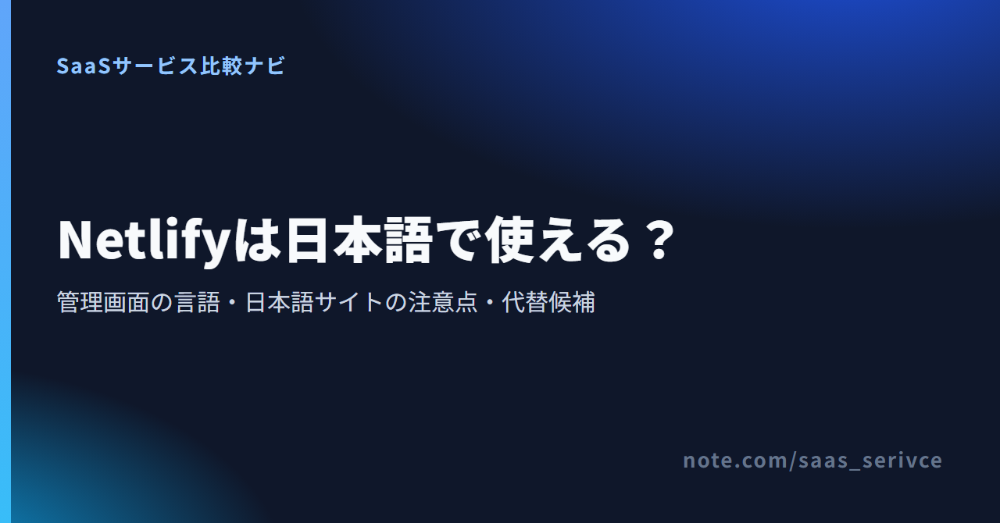

AIで作ったサイトや自作のポートフォリオをNetlifyで公開しようとして、管理画面が英語だけだと気づいて手が止まった人もいると思います。先に答えると、Netlifyの管理画面と公式ドキュメントは英語のみで、日本語に切り替える設定はありません。サポートも英語の窓口で、日本語で対応するという記載はありません。それでも、日本語で書いたサイトそのものは公開できます。
英語の画面にどこまで付き合えば公開までたどり着けるのか、日本語のファイル名やドメインで何に気をつけるのかが分かれば、Netlifyのまま進めるか、日本語の管理画面を持つ別のサービスにするかを決められます。
料金ページも英語ですが、無料のFreeと有料プランの月額はここで確かめられます。
英語のみなのは管理画面とドキュメントです。サポートも英語の窓口で日本語対応の記載はありませんが、日本語サイトの公開そのものには対応しています。
表示言語を選ぶ設定がないため、日本語で読むにはブラウザの翻訳機能を使うことになります。翻訳の手順と、翻訳に任せてはいけない箇所は次の章で説明します。
ドキュメントも公式サイトと同じく英語です。有志による日本語訳も見つかりますが、数年前に途中まで訳されたもので、現在の画面や料金体系とは合いません。
本文を日本語で書く分には、英語のサイトと同じように公開できます。手間がかかるのはURLとドメインまわりです。リダイレクト設定では日本語のパスをエンコードして書く必要があり、日本語ドメインはNetlifyでは取得できません。
問い合わせ先は英語のフォーラムとメールで、日本語対応の記載はありません。請求はUSD建てで、JCBが使えるかは公開されている情報からは分かりません。
公式の日本語化はできないので、ブラウザの翻訳機能で読むのが現実的です。ただし訳されたボタン名は公式ドキュメントの英語表記と一致しなくなるため、設定値の入力や検索は英語の原文で行います。
User settingsで変更できるのは、アバター、名前、メールアドレス、パスワード、既定のチーム、Git連携、外観テーマ、キーボードショートカット、2要素認証で、言語を切り替える項目はありません。
Google Chromeを例にすると、翻訳は次の流れで使えます。
英語のページを常に翻訳する設定もできますが、次のような理由から、設定を触るときは原文表示に戻すのがおすすめです。
初心者がつまずきやすいのは「デプロイ設定」「ドメイン設定」「クレジット使用量」の3画面です。英語のラベルと意味を対で覚えておけば、翻訳しなくても操作できます。
GitHubなどのリポジトリと連携するときに、何をどこから公開するかを決める画面です。Project configurationのDeveloper settingsにある、Continuous deploymentの中のBuild settingsで設定します。
書き出したサイトのフォルダ（またはzip）をブラウザにドラッグ＆ドロップして公開するNetlify Dropなら、この画面の設定は要りません。アカウントを作る前でも公開できるので、AIツールで作ったサイトを試しに載せるなら、もっとも手順が少ない方法です。
取得済みのドメインをサイトに結び付ける画面です。左のメニューのDomain managementから「Add a domain」→「Add a domain you already own」と進み、ドメイン名を入力します。カスタムドメインの追加とSSL（https化）は無料のFreeでも使えるため、独自ドメインのためだけに有料プランへ上げる必要はありません。
いまの料金体系では、毎月付与されるクレジットをデプロイや通信量に応じて消費します。Freeは月300クレジットのハード上限で、使い切ると次の請求サイクルが始まるまで、チームの全サイトが「Site not available」の表示になります。
メールと管理画面への通知は、使用量が50%を超えたあたりから段階的に届き、100%に達したときにも届きます。英文のメールを読み飛ばすと、サイトが止まってから気づくことになります。内訳はUsage & billingでこまめに確かめてください。
日本語の本文を載せたサイトは通常どおり公開できます。気をつけたいのは、ファイル名・URL、リダイレクト設定、日本語ドメインの3つです。
ファイル名に日本語を使うかどうかは、次のリダイレクト設定とつながっています。Netlifyの転送設定では日本語のパスをエンコードして書く必要があるため、ページが増えてからURLを変えると、その分だけ書き換えの手間がかかります。
日本語を含むURLは、コピーしてSNSやメールに貼ると「%E4%BC%9A…」のような長い英数字の列に変わって見える点も見落としがちです。ファイル名とフォルダ名は「about.html」のように英数字でそろえておくのが無難で、見出しや本文は日本語のままで構いません。
古いURLから新しいURLへ転送する設定は、_redirectsファイルかnetlify.tomlに書きます。Netlifyの公式ドキュメントでは、パスに含まれる特殊文字はURLエンコードして書くよう定められています。日本語のパスも、日本語のまま書かずにエンコードした形で指定します。
エンコード後の文字列は、ブラウザのアドレスバーからコピーするか、変換ツールで作れます。
Netlifyでは、「例え.jp」のような日本語ドメイン（国際化ドメイン名）を購入・登録できません。使いたい場合は、日本語ドメインを扱う他社のレジストラで取得してから、Domain managementの「Add a domain you already own」で追加します。
追加するときにうまく受け付けられない場合は、「xn--」で始まるPunycode（ピュニコード）の形に変換して試す方法があります。変換は、ドメインを取得したレジストラの管理画面や無料の変換ツールで行えます。
窓口は英語のフォーラムとメールで、日本語の担当者の記載はありません。請求はUSD建てで、請求書は管理画面から取得できます。
質問は翻訳ツールで英文にしてから送る前提になります。エラーログは翻訳せず原文のまま貼ると、やり取りが短く済みます。
受け付けるカードブランドの一覧は公開されておらず、JCBが使えるかは確かめられませんでした。
海外サービスの利用料にかかる消費税やインボイスの扱いは、事業の状況で変わるため、税理士に確認してください。
有料プランに進むときは、手元のカードで決済できるかを申し込み画面で確かめてから切り替えてください。
管理画面を日本語に切り替えられるのはCloudflare Pagesです。Vercelは日本語化が公式に示されていませんが、JCBを公式に明記しているので、NetlifyでJCBが通らなかったときの候補になります。
コードを書かずに日本語の画面だけで作りたいなら、国産のノーコードツールSTUDIOもありますが、ここではNetlifyと同じくコードやGitから公開するサービスに絞ります。
サイトに動的な処理（Pages Functions）を加える場合は、Workersの無料枠を使い、足りなければ月$5からの有料プランになります。管理画面は日本語で使えても、サポート窓口が日本語で対応するという記載はありません。
リンク先では、無料プランの範囲とビルド回数の上限を確認できます。英語を避けたい理由が管理画面だけなら、最初に比べたいサービスです。
画面の言語はNetlifyと同じ条件です。NetlifyでJCBが通らなかったときの移り先にはなりますが、商用で使うならProの月$20が毎月かかる点も含めて比べてください。メールサポートもProからで、Hobbyでは使えません。
料金ページでは、Hobbyの利用条件とProのシート単位の料金を確認できます。副業や受託のサイトをVercelに載せるなら、最初からProの料金で見積もっておきましょう。
無料のFreeで始められますが、毎月の枠を使い切ると追加課金ではなくサイトが止まります。
有料プランなら、自動リチャージを有効にしておけば、クレジットを使い切ってもサイトを止めずに動かせます。ただし初期設定はオフなので、止めたくないサイトを載せるなら、有料化と同時にこの設定を見直してください。1ドル=157円換算（執筆時点の目安。為替で変動）で、Personalは約1,413円、Proは約3,140円からです。
2と4の画面は、前半の対訳を見ながら進めれば翻訳なしでも操作できます。
Freeは枠を使い切った時点でサイトが止まり、次の請求サイクルかアップグレードまで表示されません。50%や75%の通知が届いた段階で、有料プランに切り替えるかを判断してください。料金ページでは各プランの月額と付与クレジットを見比べられます。
日本語で使ううえで迷いやすい3つの疑問に答えます。
静的なサイトを公開するだけなら、触る画面はデプロイ設定とドメイン設定、使用量の確認くらいです。ブラウザ翻訳で全体をつかみ、入力とエラーの検索だけ原文で行えば、公開まではたどり着けます。ビルドエラーの解決やサポートとのやり取りは、翻訳ツールを併用して時間をかける前提で考えてください。
Netlifyは受け付けるカードブランドの一覧を公開していないため、JCBが使えるかは確かめられていません。まずはNetlifyの申し込み画面で、手元のJCBが通るかを試してください。通らなかった場合は、JCBを公式に明記しているVercelが候補です。ただし商用のサイトでは無料のHobbyを使えず、Pro（開発者1人あたり月$20）が前提になります。
別物です。Netlify CMSは、サイトの記事をブラウザから編集するためのオープンソースの管理ツールで、2023年2月にDecap CMSという名前に変わりました。Netlifyがなくても使えるツールです。反対に、ホスティングサービスとしてのNetlifyを使うのに、Decap CMSを導入する必要もありません。
管理画面が英語でも、ブラウザ翻訳と3画面の対訳があれば静的サイトの公開はできます。日本語の管理画面が欠かせないなら、Cloudflare Pagesを比べてください。
まずは無料のFreeで自分のサイトを公開し、英語の画面で困らないかを確かめてから、有料プランや他サービスを検討してください。